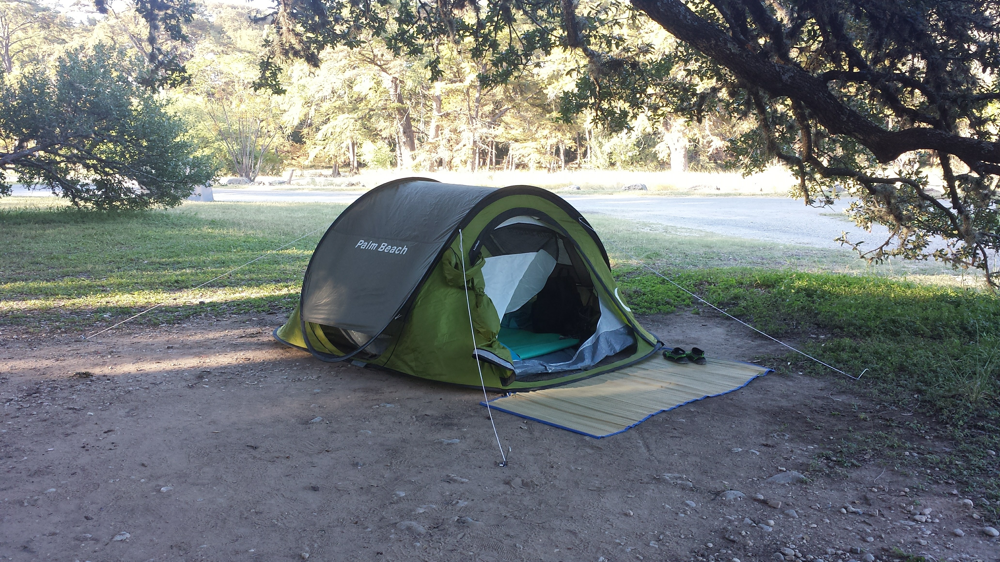

This camp site was located at Garner State Park, a west Texas state park.
Garner state's water is crystal clear...you can see straight to the bottom with the only obstruction coming from the water's riples.
I highly recomend visiting.
My past camping trips & photograghy documenting the experience.

Garner State Park
Things to do there:
- Kayaking
- Hiking
- Grilling
- fishing
- Bird watching
 Garnerstatepark.com>
Garnerstatepark.com>
Birds you may see at Garner State Park:
- Golden-cheeked warblers
- Currently on the endangered species list
- Recently taken off the endangered species list
- Black-capped vireo
Enchanted Rock
Along the hike you'll encounter wildlife and enjoy the beautiful views of the west Texas hill country...
..all that fun can make it easy to forget to hydrate, be sure to bring plenty of water!

Enchanted Rock Tx State Park>
What you will need on a camping trip in west Texas:
- Tent
- Sleeping bag
- Sunscreen
- Water
- Hiking shoes
- Clothing appropriate for high tempetures
- Fruit and non parishable foods
- Toilet paper
- Multipurpose tool
- Bug repelant
- Hat or sunglasses